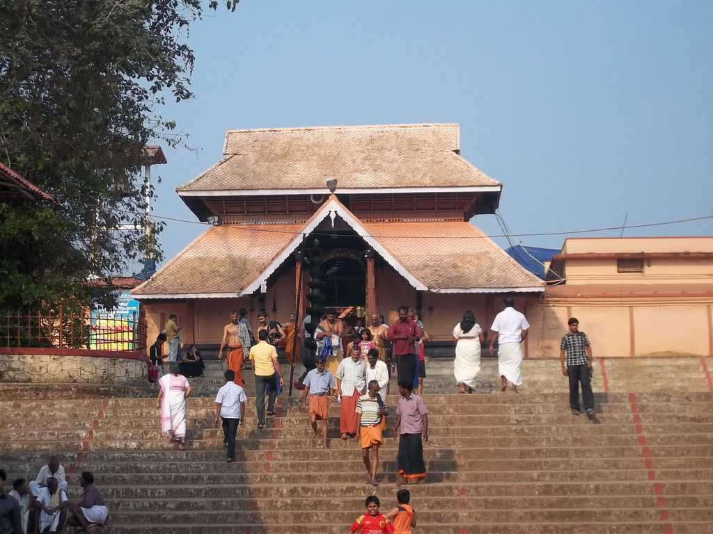

PLACES TO VISIT IN KOTTAYAM
Valiyapalli
Valiyapalli, meaning ‘big church’ was built in 1550. The church built entirely in wood was demolished in the year 1577. The church built later was done fully in stone. The church is known for its Persian crosses, woodcarvings, Syrian inscriptions and mural paintings
Thirunakkara Temple

This temple is famous for its low roofed stage or Koothambalam which is decorated with carved windows. The festivals held in the months of October-November, June-July and March-April see the performance of folk arts such as Mayilattom (Peacock dance) and Velakali. The all-night Kathakali performance is an added attraction.
Pala
The town known for its churches is also known for its huge rubber and cashew plantations. Pala has several pilgrimage centres such as St Mary’s Church located at Bharananganam where the remains of Saint Alphonsa are buried; the Shrine of our lady of Immaculate Conception which is a landmark structure also called the ‘Jubilee Kappela’, was constructed out of 14,444 granite stones; the Kayyoor temple set atop a hill where only ghee is used to light the lamps; the St Mary’s Forane Church built in 345 AD; and the St George Church in Erattupetta which is a 120 feet high structure. The Poonjar Palace surrounded by the Meenachil River on three sides and the Ayyampara Hills where one can see 30 acres of land covered with flat granite stones are other places worth a visit.
Kanjirappilly
Also referred to as the gateway to the High ranges, Kanjirapally is a town that is a planter’s paradise. Rubber Plantations, banana, tapioca, pepper, vanilla and ginger are the important crops that sustain the town’s economy. Places worth a visit are: the St Mary’s Church which was established in 1449, the St Dominic Cathedral built in 1826, the Ganapathiyar Kovil which is a 900 year old structure that has inscriptions on its granite pillars and the St Thomas Benedictine Abbey which has a unique style of architecture.
Kumarakom Bird Sanctuary

The bird sanctuary here, which is sprawled over 14 acres, is a favorite haunt for migratory birds and an ornithologist's paradise. Egrets, darters, herons, teal, waterfowl, cuckoo, wild duck and migratory birds like the Siberian stork that arrive in flocks are a fascination for visitors. The best way to watch the birds of the Kumarakom sanctuary is a boat trip round the islands.
Erumely
A region for its communal harmony, Erumely is a town that has Hindu and Muslim shrines built close to each other. The Vavar mosque dedicated to Vavar, Lord Ayyappa’s Muslim friend, is visited by pilgrims going to Sabarimala. The Kochambalam opposite the Vavar Mosque is known for the Petta Thullal performed by the pilgrims visiting Sabarimala. The Valiyambalam and Puthenveedu are just a kilometer away from the kochambalam. The Puthenveedu is believed to be the place where Lord Ayyappa was given food and shelter to, by a good old lady. The small old, thatched mud house displays the sword that Lord Ayyapa gifted to the lady to repay for her kindness.
Elaveezhapoonchira

Located at a distance of 55 kms from Kottayam and 20 kms from Thodapuzha, this is another picnic spot located in the midst of the beautiful hillocks near Kanjar. ‘Elaveezhapoonchira’ means ‘the valley where leaves do not fall' and is so named because the place has no trees. This is also one of the best places in Kerala to witness the sunrise and sunset. It is easily accessible from Palai in Kottayam district. The place is surrounded by three enchanting hillocks: Mankunnu, Kodayathoormal and Thonippara, making the place ideal for trekking.
Kumarakom Backwaters

The village of Kumarakom is a cluster of little islands on the Vembanad Lake, and this small water world is part of the Kuttanad region. An enchanting backwater destination, Kumarakom offers visitors many other leisure options. Boating and fishing facilities are available at Kumarakom. Holiday packages on the houseboats, traditional Kettuvalloms, are an out-of-this-world experience at Kumarakom.
Kumaranelloor
Kumaranelloor is famous for the Karthyayani (Devi) temple. Here "Trikarthika" day is important which is celebrated in the month of Vrischikam (November-December). The display of lights in the evening (Karthika Vilakku) is the highlight of this celebration.